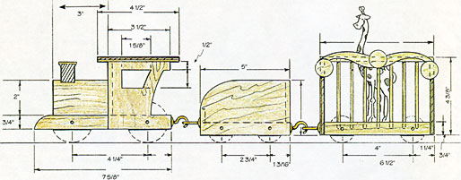
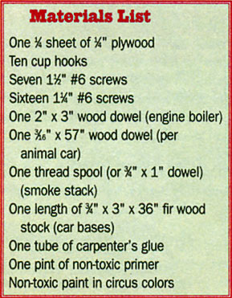

My father had a small workshop in the basement for as long as I can remember. He loved to putter and make things. He built a lot of the furniture in the house and was always making things for the kitchen to help mother. For us kids, he made toys for Christmas and birthdays. If the door to the basement was locked, we knew he was working on something for us.
My children still play with some of the toys my father made. Handmade to me means made with love. My favorite toy to this day is the model-pond yacht; my sister has the six-car circus train on her mantle. What could be more exciting to a child than a steam locomotive? Well, maybe a circus. And the combination of the two? Well, that's got to be some powerful magic. I know our childhood imaginations went on a lot of train trips.
The building of the engine, tender (coal-car), and circus cars is pretty straightforward. Cut out the individual pieces and glue them together!
Click here for the train construction details.
Click here for the circus animals construction details.
There are only a few assembly hints I'd like to pass along.
1. Glue all the pieces together with a good quality carpenter's adhesive using brads (small finish nails) to hold everything in place until the glue sets.
2. Cut the cowcatcher to its round shape and finish sharpening it with a wood rasp (file) or rough sandpaper.
3. When drilling the holes for the cage bars, clamp (or temporarily nail) the top and bottom together and drill both holes at the same time. Put a piece of tape around the drill bit 5/8" from the tip to serve as a drilling depth gauge. This way all the holes will line up and be the same depth. Cut all of the bars (3/16" dowels) to the same length (4 inches). When you assemble everything, you'll get a perpendicular, aligned fit.
4. Prime and paint everything in bright circus colors using non-toxic paint (children like to chew on the darnedest things).
5. The wheels for the engine are two layers of 1/4" plywood glued together. Cut the wheels from plywood, or cut sections off of a dowel of the proper diameter. If you use a dowel for the car wheel make them 3/4" wide. It's surprising how many people will throw a broom away when the bristles wear out; they're throwing away a perfectly good $3 dowel.
6. You can vary any of the dimensions you want as long as the adjoining piece has been dimensionally corrected to fit. Let's say you have a scrap piece of 3/8" plywood instead of 1/4". By all means, use it! Just compensate for that extra 1/8".
7. All patterns are laid out on a grid of one-inch squares.
8. When you cut around the animals, leave the cross-hatch area intact.
9. An easy way to get all the patterns to scale is to take the pages to a copy center and have them "blow-up" the patterns so the squares are exactly 1" x 1". Then all you have to do is trace and cut out the pieces. At the copy center, also have them make several copies of the cage top/bottom. Glue (rubber cement) this to the wood. Then cut and drill following the pattern. When you're done, simply peel the paper off. You can do this with the animal patterns too.
10. Attach all wheels using a 1 1/4" #6 screw with washer for the cars and a 1 1/2" #6 screw with washer for the engine.
11. Align and screw in cup hooks for car couplings.
|
 By Will Shelton A wooden circus train for your child and the child in all of us. See the text for a link to downloadable constuction details. |
 Circus train materials list. |
|